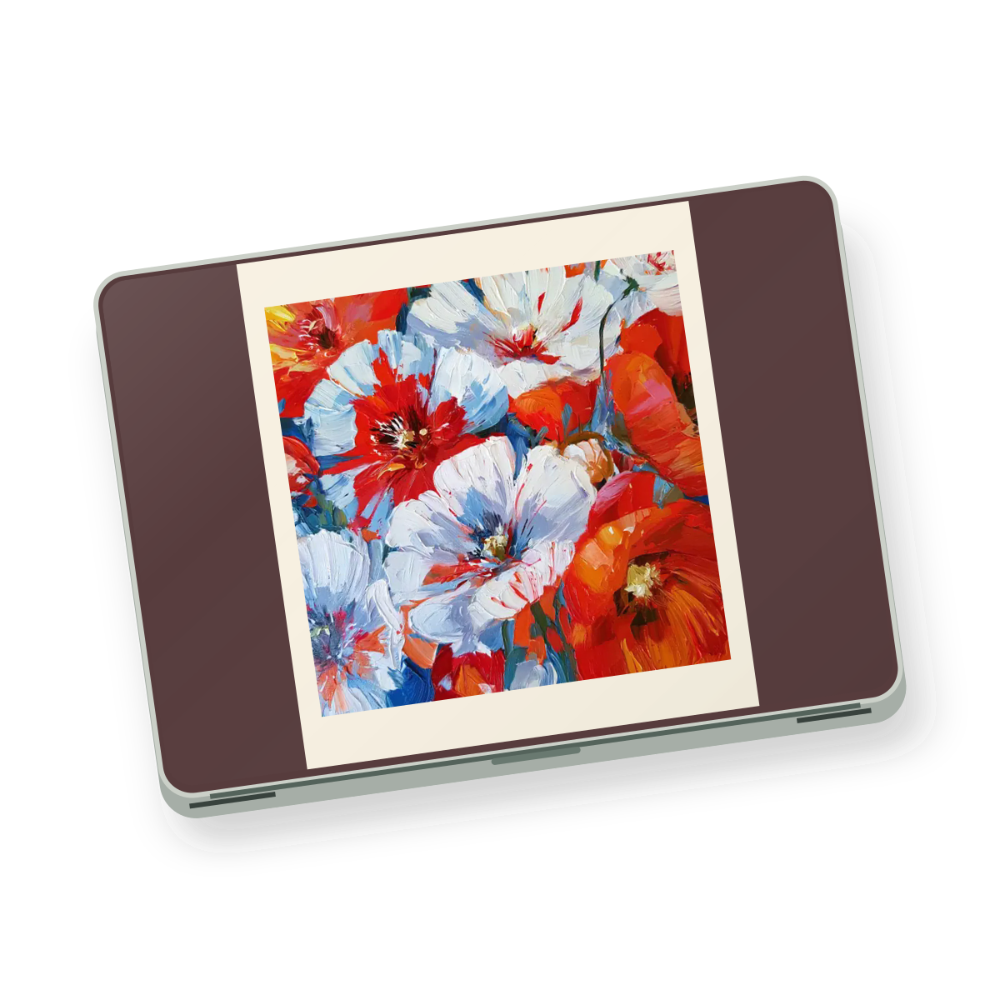
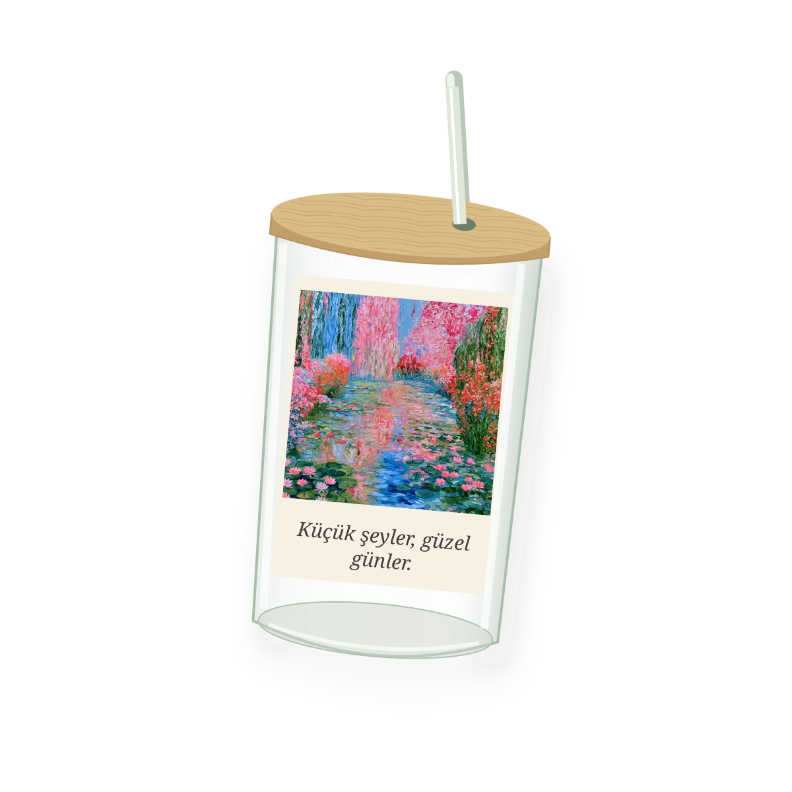
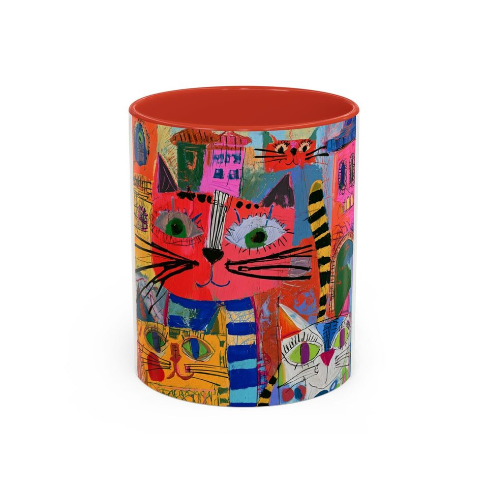

Ürün + sanat hikâyesi
Tablo ve omuz çantası, kolye, kapüşonlu battaniye, plaj havlusu, fular ve duvar örtüsü öne çıkıyor. Koleksiyonlar sanatçıya göre de gezilebiliyor.
Kategori yapısı ↗SEÇKİ 003 · 12 YENİ ÜRÜN GRUBU
Telefonunda, masanda, evinin en sevdiğin köşesinde.
19 ürün grubu, her birinde 100 farklı tasarım.


KUPANIN ÖTESİNDE
Bir ürüne dokun, yakından incele.
Kalbine yakın olanları seçkine ekle.
Başka bir kelime deneyebilir ya da filtreleri temizleyebilirsin.
1.800 tasarım dijital ürün önizlemesidir. Önceki 100 kupanın Printify taslakları hazırdır. Yeni modellerin kesin baskı ölçüleri ve üretim dosyaları ayrıca hazırlanacak.
ARAŞTIRMA NOTLARI / 13 EKİM 2026
Aynı sanat temasını farklı eşyalarda bir araya getiriyor. Çanta, havlu ve duvar örtüsü tek başına bir ürün; birlikte bir koleksiyon oluyor.
Artucky’yi incele ↗Tablo ve omuz çantası, kolye, kapüşonlu battaniye, plaj havlusu, fular ve duvar örtüsü öne çıkıyor. Koleksiyonlar sanatçıya göre de gezilebiliyor.
Kategori yapısı ↗Çanta–fular ve plaj setleri sunuyor. Ürün sayfalarında hediye notu, malzeme, bakım bilgisi ve eserin hikâyesi birlikte yer alıyor.
Örnek ürün sayfası ↗ Setler ↗Kendi Midjourney arşivimizden 100 farklı görsel. Seçilen 100 görselin her biri 18 farklı ürüne uyarlandı. Önceki kupalarla birlikte 1.900 tasarım tek galeride. Bazılarında beş dilden kısa sözler; her üründe formuna uygun yerleşim.
12 yeni grup ekledik: bilgisayar ve kulaklık kılıfı, tablet kılıfı, masa matı, telefon standı, powerbank; tepsi, beslenme kutusu, Amerikan servis, pipetli cam bardak, termos ve matara. Her grupta 100 tasarım var.
Ev & mutfak ↗ Teknoloji ↗ÜRÜN ARAŞTIRMASI
Printify kataloğunda karşılığı bulunan ürün grupları.
Her birinde 100 farklı tasarım önizlemesi.
SEÇKİ 001 / HAZIR PRINTIFY TASLAKLARI
Önceki koleksiyondaki 100 kupa, beş farklı modelde seni bekliyor.
100 kupayı gör ↗
Artvelix · Tasarım galerisi. Görseller ve indirilebilir dosyalar web önizlemeleridir; baskı masterı değildir. Sipariş ve ödeme alınmaz.